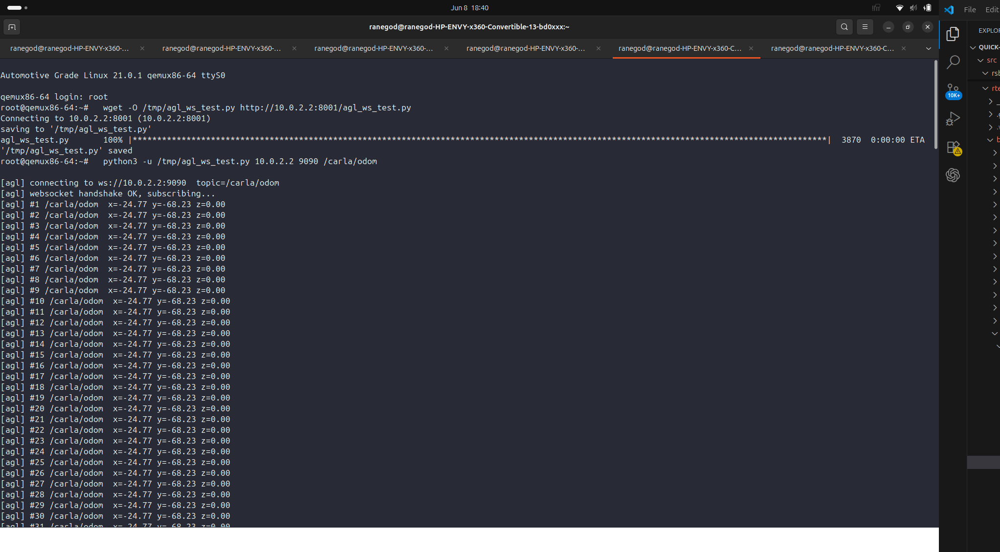

Week 1 proved the plumbing with fake data. Week 2 replaces the fake publisher with the real CARLA car — and works through the three runtime bugs that stood in the way.
Because CARLA's Python (3.7) and ROS2's Python (3.11) can't share a process, the bridge is split in two, communicating over a local UDP socket:
Start CARLA headless — the same no-GPU launch from community bonding:
cd ~/carla-sim && ./CarlaUE4.sh -RenderOffScreen -nosound -carla-rpc-port=2000Starting the bridge the instant port 2000 appeared gave:
RuntimeError: time-out of 20000ms while waiting for the simulatorCARLA opens its port before it can actually answer API calls. Fix wait until the port is up, then ~30 s more:
until ss -ltn | grep -q ":2000"; do sleep 2; done; sleep 25The ego car spawned, but enabling autopilot crashed:
RuntimeError: trying to create rpc server for traffic manager;
but the system failed to create because of bind error.CARLA's Traffic Manager (which drives autopilot vehicles) opens its own server on port 8000 — the exact port I'd used for the HTTP file server in Week 1. Two servers, one port. Fix free port 8000 (use a different port for file transfer, e.g. 8001):
pkill -f "http.server 8000"Each crashed attempt above had spawned a car before dying, and never cleaned it up. After a few tries:
RuntimeError: Spawn failed because of collision at spawn positionFix harden the spawn logic — destroy existing vehicles first, then try spawn points until one is free (try_spawn_actor returns None on collision instead of raising):
for a in world.get_actors().filter('vehicle.*'):
try: a.destroy()
except Exception: pass
spawns = world.get_map().get_spawn_points(); random.shuffle(spawns)
ego = None
for sp in spawns:
ego = world.try_spawn_actor(bp, sp)
if ego: break
ego.set_autopilot(True)With all three fixed, both halves of the bridge come up:
conda activate carla && python -u ~/carla-bridge/carla_to_udp.py
spawned ego: vehicle.tesla.model3 id 25
conda activate ros2 && python -u ~/carla-bridge/udp_to_ros2.py
[carla_odom_bridge]: publishing /carla/odomConfirm the topic carries real coordinates, at the right rate:
ros2 topic hz /carla/odom
average rate: 19.86 # ~20 Hz — matches the project's sensor specSame client, same AGL VM, real data. The dashboard now prints the position of an autonomous car driving itself around the CARLA map — and the numbers change as it moves:
root@qemux86-64:~# python3 -u /tmp/agl_ws_test.py 10.0.2.2 9090 /carla/odom
[agl] #150 /carla/odom x=2.57 y=133.72 z=0.00
[agl] #312 /carla/odom x=-2.65 y=133.69 z=0.00
[agl] #629 /carla/odom x=-3.60 y=133.68 z=0.00 # ← x decreasing: the car is driving
10.0.2.2:8001) and subscribing — a continuous stream of /carla/odom messages from CARLA arriving over rosbridge. The ROS2 topic data is now visible inside AGL.End-to-end, live. An AGL image — running as a VM, in QEMU on a GPU-less server — subscribes to live odometry from a self-driving car in CARLA, over rosbridge, at 20 Hz. Every link in the pipeline runs on one machine.
| Component | Environment | Role |
|---|---|---|
| CARLA server | native (tmux) | Simulates the car — no GPU, software render |
carla_to_udp.py | conda carla (Py 3.7) | Reads ego pose → UDP |
udp_to_ros2.py | conda ros2 (Py 3.11) | UDP → ROS2 /carla/odom |
rosbridge_websocket | conda ros2 | ROS2 → WebSocket JSON on :9090 |
| AGL + client | QEMU VM (tmux) | WebSocket client reads /carla/odom |
Week 2 proves the transport — the foundation the visualization sits on. Two things build on top of it: